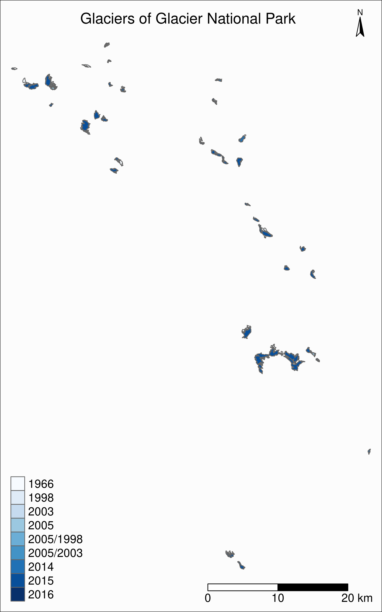

Introduction to GIS with R
This workshop is an introduction to GIS in R. We will learn how to import GIS data, explore it, and map it.
In particular, we will create maps (inset maps, faceted maps, animated maps, interactive maps, and raster maps), thanks to the packages sf, tmap, raster, leaflet, ggplot2, grid (part of Base R), and mapview.
We will also learn how to add basemaps from OpenStreetMap and Google Maps.
Getting the data
Datasets
For this webinar, we will use:
- the Alaska as well as the Western Canada and USA subsets of the Randolph Glacier Inventory version 6.01
- the USGS time series of the named glaciers of Glacier National Park2 The datasets can be downloaded as zip files from these websites.
1 RGI Consortium (2017). Randolph Glacier Inventory – A Dataset of Global Glacier Outlines: Version 6.0: Technical Report, Global Land Ice Measurements from Space, Colorado, USA. Digital Media. DOI: https://doi.org/10.7265/N5-RGI-60.
2 Fagre, D.B., McKeon, L.A., Dick, K.A., and Fountain, A.G., 2017, Glacier margin time series (1966, 1998, 2005, 2015) of the named glaciers of Glacier National Park, MT, USA: U.S. Geological Survey data release, https://doi.org/10.5066/F7P26WB1.
Basemaps
For our basemaps, we will use data from:
- Natural Earth: this dataset can be accessed direction from within R thanks to the packages rnaturalearth (which provides the functions) and rnaturalearthdata (which provides the data)
Loading and exploring data
First, let’s load the necessary packages for this webinar:
library(sf)
library(tmap)
library(dplyr)
library(magrittr)
library(purrr)
library(rnaturalearth)
library(rnaturalearthdata)
library(mapview)
library(grid) # part of base R (already installed), but needs to be explicitly loadedWe will start by mapping all the glaciers of Western North America thanks to:
- the Alaska subset of the Randolph Glacier Inventory
- the Western Canada and USA subset of the Randolph Glacier Inventory
Download and unzip 02_rgi60_WesternCanadaUS and 01_rgi60_Alaska from the Randolph Glacier Inventory version 6.0.
Data get imported and turned into sf objects by the function sf::st_read():
ak <- st_read("01_rgi60_Alaska")
wes <- st_read("02_rgi60_WesternCanadaUS")Make sure to use the absolute paths or the proper paths relative to your working directory (which can be obtained with getwd() and modified with setwd()).
You can print and explore your new objects:
ak
wes
str(ak)
str(wes)sf objects are data.frame-like objects with a geometry list-column as their last column. That column is itself an object of class sfc (simple feature geometry list column).
Mapping with tmap
tmap follows a grammar of graphic similar to that of ggplot2: you first need to set a shape (a spatial data object) by passing an sf object to tm_shape(). Then you plot one or several layers with one of several tmap functions and you use the + sign between each element.
To see the available options, run:
?tmap-elementWe could thus plot the glaciers of Alaska with any of the options below:
tm_shape(ak) +
tm_borders()
tm_shape(ak) +
tm_fill()
tm_shape(ak) +
tm_polygons() # shows both borders and fillHere, we will use tm_polygons() which combines tm_borders() and tm_fill().
Layout elements and attribute layers
A map without title, compass, or scale bars is not very useful though. We need to add layout elements and attribute layers to the map.
You can loop up the many arguments of the tmap functions in the help pages to see how you can customize your maps:
?tm_layout
?tm_compass
?tm_scale_barLet’s now map the glaciers of Alaska:
tm_shape(ak) +
tm_polygons() +
tm_layout(
title = "Glaciers of Alaska",
title.position = c("center", "top"),
title.size = 1.1,
bg.color = "#fcfcfc",
inner.margins = c(0.06, 0.01, 0.09, 0.01),
outer.margins = 0,
frame.lwd = 0.2
) +
tm_compass(
type = "arrow",
position = c("right", "top"),
size = 1.2,
text.size = 0.6
) +
tm_scale_bar(
breaks = c(0, 500, 1000),
position = c("right", "BOTTOM")
)
Union of bounding boxes
Now, if we want to plot all the glaciers of Western North America, we want to combine both sf objects in the same map. A map can contain multiple shapes: you only need to “add” a tm_shape and its element(s). Before doing so however, it is very important to ensure that they have the same coordinate reference system (CRS):
st_crs(ak)
st_crs(wes)
st_crs(ak) == st_crs(wes)They do, so we are good to go.
As with ggplot2 or GIS graphical user interfaces, the order matters since the layers stack up on top of each other.
tm_shape(ak) +
tm_polygons() +
tm_shape(wes) +
tm_polygons()If you run the code above however, you may be surprised that you are still only plotting the map of Alaska.
This is because each map comes with a spatial bounding box (bbox).
st_bbox(ak)
st_bbox(wes)In the code above, the bbox is set by the first shape, i.e. our entire map uses the bbox of the Alaska sf object.
We first need to create a new bounding box encompassing both bounding boxes:
nwa_bbox <- st_bbox(
st_union(
st_as_sfc(st_bbox(wes)),
st_as_sfc(st_bbox(ak))
)
)We can now plot the glaciers of Western North America:
tm_shape(ak, bbox = nwa_bbox) +
tm_polygons() +
tm_shape(wes) +
tm_polygons() +
tm_layout(
title = "Glaciers of Western North America",
title.position = c("center", "top"),
title.size = 1.1,
bg.color = "#fcfcfc",
inner.margins = c(0.06, 0.01, 0.09, 0.01),
outer.margins = 0,
frame.lwd = 0.2
) +
tm_compass(
type = "arrow",
position = c("right", "top"),
size = 1.2,
text.size = 0.6
) +
tm_scale_bar(
breaks = c(0, 1000, 2000),
position = c("right", "BOTTOM")
)
Maps based on an attribute variable
What is interesting about glacier maps is to see their evolution through time as glaciers retreat due to climate change. While the Randolph Glacier Inventory (RGI) has an amazing map in terms of spacial coverage, it doesn’t yet have much temporal data.
To look at glacier retreat, we will look at the USGS time series of the named glaciers of Glacier National Park3. These 4 datasets have the contour lines of 39 glaciers for the years 1966, 1998, 2005, and 2015.
3 Fagre, D.B., McKeon, L.A., Dick, K.A., and Fountain, A.G., 2017, Glacier margin time series (1966, 1998, 2005, 2015) of the named glaciers of Glacier National Park, MT, USA: U.S. Geological Survey data release, https://doi.org/10.5066/F7P26WB1.
We could load and clean these datasets one by one. Copying and pasting code however is inefficient and error-prone. A better approach is to do this in a functional programming framework: create a function which does all the data loading and cleaning, then pass each element of a vector of the paths of all 4 datasets to it using purrr::map().
“Cleaning” here consists of selecting the variables we are interested in, putting them in the same order in each dataset (they were not initially) and giving the exact same name across all datasets (there were case inconsistencies between datasets and R is case sensitive).
# create a function that reads and cleans the data
prep <- function(dir) {
g <- st_read(dir)
g %<>% rename_with(~ tolower(gsub("Area....", "area", .x)))
g %<>% select(
year,
objectid,
glacname,
area,
shape_leng,
x_coord,
y_coord,
source_sca,
source
)
}
# create a vector of dataset names
dirs <- grep("GNPglaciers_.*", list.dirs(), value = T)
# pass each element of that vector through prep() thanks to map()
gnp <- map(dirs, prep)map() returns a list, so we now have a list (gnp) of 4 elements: the 4 sf objects containing our cleaned datasets. A list is not really convenient and we will turn it into a single sf object.
Before doing so however, we want to make sure that they all have the same CRS:
st_crs(gnp[[1]]) == st_crs(gnp[[2]])
st_crs(gnp[[1]]) == st_crs(gnp[[3]])
st_crs(gnp[[1]]) == st_crs(gnp[[4]])They do, so we can turn gnp into a single sf object:
gnp <- do.call("rbind", gnp)
gnp
str(gnp)We can now map the data:
tm_shape(gnp) +
tm_polygons("year", palette = "Blues") +
tm_layout(
title = "Glaciers of Glacier National Park",
title.position = c("center", "top"),
legend.title.color = "#fcfcfc",
legend.text.size = 1,
bg.color = "#fcfcfc",
inner.margins = c(0.07, 0.03, 0.07, 0.03),
outer.margins = 0
) +
tm_compass(
type = "arrow",
position = c("right", "top"),
text.size = 0.7
) +
tm_scale_bar(
breaks = c(0, 10, 20),
position = c("right", "BOTTOM"),
text.size = 1
)I didn’t want to show the legend title and because there is no option to remove it, I set its color to that of the background.

CRS transformation
Wouldn’t it be nice to have this map as an inset of the previous map so that we can situate it within North America?
Before we can do this, we need to make sure that both maps use the same CRS:
st_crs(ak)
st_crs(gnp)We could use wes instead of ak since we know that both sf objects have the same CRS.
They don’t have the same CRS, so we reproject gnp by transforming its data from its current CRS to that of ak.
gnp <- st_transform(gnp, st_crs(ak))
st_crs(gnp)Inset map
Now we can create our map with an inset: the map of the Western North America glaciers (from the sf object nwa) will be our main map and the map of Glacier National Park (from the sf object gnp) will be the inset.
If the goal of this new map is to show the location of the gnp map within the nwa one, we need to add a rectangle showing the bounding box of gnp in the nwa map as a new layer.
For this, we create a new sfc_POLYGON from the bounding box of gnp:
gnp_zone <- st_bbox(gnp) %>%
st_as_sfc()We will use it as the following layer within the new map:
tm_shape(gnp_zone) +
tm_borders(lwd = 1.5, col = "#ff9900")We assign our new map (with an updated suitable title) to the object main_map:
main_map <- tm_shape(ak, bbox = nwa_bbox) +
tm_polygons() +
tm_shape(wes) +
tm_polygons() +
tm_shape(gnp_zone) +
tm_borders(lwd = 1.5, col = "#ff9900") +
tm_layout(
title = "Glaciers of Glacier National Park",
title.position = c("center", "top"),
title.size = 1.1,
bg.color = "#fcfcfc",
inner.margins = c(0.06, 0.01, 0.09, 0.01),
outer.margins = 0,
frame.lwd = 0.2
) +
tm_compass(
type = "arrow",
position = c("right", "top"),
size = 1.2,
text.size = 0.6
) +
tm_scale_bar(
breaks = c(0, 500, 1000),
position = c("right", "BOTTOM")
)Next, we will change the frame of the gnp inset to match the color of this new rectangle (to make it visually clear that this is a close-up view of that rectangle). We can also remove the title, compass and scale bar since this is an inset within a map which already have them. We assign this new map to the object inset_map:
inset_map <- tm_shape(gnp) +
tm_polygons("year", palette = "Blues") +
tm_layout(
legend.title.color = "#fcfcfc",
legend.text.size = 0.7,
bg.color = "#fcfcfc",
inner.margins = c(0.03, 0.03, 0.03, 0.03),
outer.margins = 0,
frame = "#ff9900",
frame.lwd = 3
)Finally, we combine the two maps with grid::viewport():
main_map
print(inset_map, vp = viewport(0.41, 0.26, width = 0.5, height = 0.5))Tiled web maps with Leaflet
Tiled web maps are interactive maps in a browser using web servers such as Google Maps or OpenStreetMap. Several packages allow to use Leaflet (an open-source JavaScript library for interactive maps) to create tile maps.
With mapview
The simplest option is to use mapview::mapview():
mapview(gnp)This will open a page in your browser in which you can pan, zoom, select/deselect data layers, and choose from a number of basemap layer options:
 CartoDB.Positron
CartoDB.Positron
 OpenTopoMap
OpenTopoMap
 OpenStreetMap
OpenStreetMap
 Esri.WorldImagery
Esri.WorldImagery
With tmap
tmap has similar capabilities.
The package has 2 modes:
plot is the default mode for static maps that we used earlier.
view is an interactive viewing mode using Leaflet in a browser. There, as with mapview, you can zoom in/out, select/deselect the different layers, and choose to display one of Esri.WorldGrayCanvas, OpenStreetMap, or Esri.WorldTopoMap basemaps.
You can toggle between the plot and view modes with ttm(), after which you can re-plot your last plot in the new mode with tmap_last(). You can also do both of these at once with ttmp().
Alternatively, you can switch to either mode with tmap_mode("view") and tmap_mode("plot").
Example:
Earlier, we plotted all the glaciers of Western North America using tmap:
After displaying this map, we could have run:
tmap_mode("view")
tmap_last()And Leaflet would have open the following interactive map in our browser:
Afterwards, if you want to create new static plots, don’t forget to get back to plot mode with tmap_mode("plot").
Mapping a subset of the data
Each glacier has 4 borders: one for each year of survey. They are however quite hard to see on such a large map.
Let’s zoom on the Agassiz glacier:
# select the data points corresponding to the Agassiz Glacier
ag <- g %>% filter(glacname == "Agassiz Glacier")And map it:
tm_shape(ag) +
tm_polygons("year", palette = "Blues") +
tm_layout(
title = "Agassiz Glacier",
title.position = c("center", "top"),
legend.position = c("left", "bottom"),
legend.title.color = "#fcfcfc",
legend.text.size = 1,
bg.color = "#fcfcfc",
inner.margins = c(0.07, 0.03, 0.07, 0.03),
outer.margins = 0
) +
tm_compass(
type = "arrow",
position = c("right", "top"),
text.size = 0.7
) +
tm_scale_bar(
breaks = c(0, 0.5, 1),
position = c("right", "BOTTOM"),
text.size = 1
)
Now we can clearly see the retreat of the Agassiz Glacier between 1966 and 2015.
Faceted map
Instead of having all temporal data in a single map however, it can be split across facets:
tm_shape(ag) +
tm_polygons(col = "#86baff") +
tm_layout(
main.title = "Agassiz Glacier",
main.title.position = c("center", "top"),
main.title.size = 1.2,
legend.position = c("left", "bottom"),
legend.title.color = "#fcfcfc",
legend.text.size = 1,
bg.color = "#fcfcfc",
# inner.margins = c(0, 0.03, 0, 0.03),
outer.margins = 0,
panel.label.bg.color = "#fcfcfc",
frame = F,
asp = 0.6
) +
tm_compass(
type = "arrow",
position = c("right", "top"),
size = 1,
text.size = 0.6
) +
tm_scale_bar(
breaks = c(0, 0.5, 1),
position = c("right", "BOTTOM"),
text.size = 0.6
) +
tm_facets(
by = "year",
free.coords = F,
ncol = 4
)
Animated map
The temporal data of the Agassiz Glacier retreat can also be conveyed through an animation:
agassiz_anim <- tm_shape(ag) +
tm_borders() +
tm_fill(col = "#86baff") +
tm_layout(
title = "Agassiz Glacier",
title.position = c("center", "top"),
legend.position = c("left", "bottom"),
legend.title.color = "#fcfcfc",
legend.text.size = 1,
bg.color = "#fcfcfc",
inner.margins = c(0.08, 0, 0.08, 0),
outer.margins = 0
) +
tm_compass(
type = "arrow",
position = c("right", "top"),
text.size = 0.7
) +
tm_scale_bar(
breaks = c(0, 0.5, 1),
position = c("right", "BOTTOM"),
text.size = 1
) +
tm_facets(
along = "year",
free.coords = F
)
tmap_animation(
agassiz_anim,
filename = "ag.gif",
dpi = 300,
inner.margins = c(0.08, 0, 0.08, 0),
delay = 100
)
Additional resources
Open GIS data:
Free GIS Data: list of free GIS datasets
Books
Geocomputation with R by Robin Lovelace, Jakub Nowosad, and Jannes Muenchow
Spatial Data Science by Edzer Pebesma, Roger Bivand
Spatial Data Science with R by Robert J. Hijmans
Using Spatial Data with R by Claudia A. Engel
Tutorial
An Introduction to Spatial Data Analysis and Visualisation in R by the CDRC
Website
r-spatial by Edzer Pebesma, Marius Appel, and Daniel Nüst
CRAN package list
Analysis of Spatial Data
Mailing list
R Special Interest Group on using Geographical data and Mapping